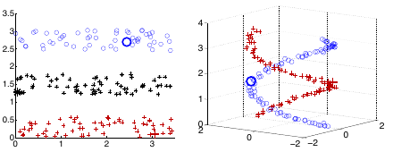
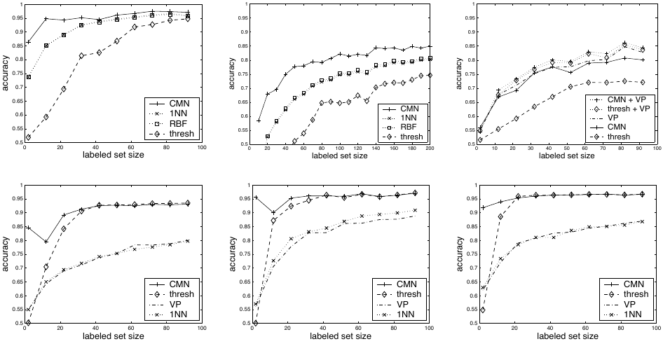
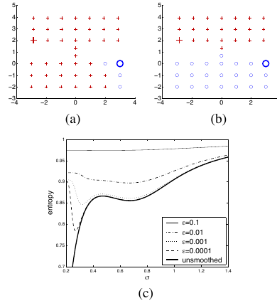
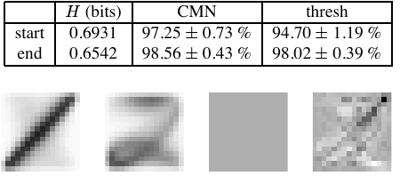

2026-05-15
Zhu, Ghahramani, and Lafferty’s ICML 2003 paper Semi-Supervised
Learning Using Gaussian Fields and Harmonic Functions is a compact
canonical statement of graph-based semi-supervised learning as a
Dirichlet problem on a weighted graph (Zhu, Ghahramani, and Lafferty
2003). Labeled examples are clamped boundary nodes, unlabeled
examples are interior nodes, and predictions are obtained by minimizing
a quadratic graph energy. The resulting function is harmonic: at every
unlabeled vertex it equals a weighted average of neighboring values.
This review treats the paper as a source for finite-graph harmonic
extension, conductance-weighted interpolation, class-mass normalization,
and entropy-based weight learning. For SIMODS and gflow,
the paper is most useful not as a direct model of current
overlap-density smoothing, but as a clean reference for how the choice
of graph weights or kernel conductances controls a Laplacian solve.
The paper is important because it turns the informal semi-supervised premise that “nearby points should have similar labels” into a precise finite-graph calculus. Given labeled points, unlabeled points, and a symmetric nonnegative weight matrix \(W=(w_{ij})\), the learning problem is not first to estimate a parametric decision boundary. It is to find the smoothest function on the graph that agrees with the known labels. The labeled nodes are fixed boundary values; the unlabeled nodes receive the interior values of a harmonic extension.
This is a particularly useful formulation for a conductance and kernel Laplacian review because the method exposes the role of the edge weights with unusual clarity. In the graph-energy view, large \(w_{ij}\) makes disagreement between \(f_i\) and \(f_j\) expensive. In the Markov view, the row-normalized matrix \(P=D^{-1}W\) controls random-walk hitting probabilities. In the electrical-network view used explicitly by the authors, the same weight is a conductance, so the solution is a voltage field with labeled classes acting as terminals. These interpretations are mathematically equivalent for the Dirichlet problem, but they emphasize different reuse patterns for later systems.
The paper is also valuable because it is sober about the graph. Its authors do not present the Gaussian affinity as universally correct; they repeatedly note that the right graph may be unclear, and they devote a section to learning feature-wise length scales. That makes the paper an early, concrete reminder that graph construction is part of the model, not disposable preprocessing.
The setup is finite and direct. There are \(l\) labeled examples and \(u\) unlabeled examples, with \(n=l+u\) graph vertices. The paper begins with binary labels \(y_i\in\{0,1\}\), orders labeled vertices first, and assumes a connected weighted graph. A typical affinity for Euclidean data is \[w_{ij} = \exp\left\{ -\sum_{d=1}^{m} \frac{(x_{id}-x_{jd})^2}{\sigma_d^2} \right\}. \label{eq:p05-gaussian-weight}\] The parameters \(\sigma_d\) are global feature-wise length scales: small \(\sigma_d\) makes the graph weight sensitive to coordinate \(d\), while large \(\sigma_d\) suppresses that coordinate. For text, the paper instead uses a sparse 10-nearest-neighbor graph under cosine similarity and an exponential cosine-distance weight. Thus the common abstraction is not a single kernel formula, but a weighted graph whose entries encode the intended notion of similarity.
The main unknown is a real-valued function \(f\) on vertices. For binary classification, a labeled zero node is clamped to \(f_i=0\), and a labeled one node is clamped to \(f_i=1\). Unlabeled values are allowed to lie between zero and one. The smoothness objective is the quadratic graph energy \[E(f) = \frac{1}{2}\sum_{i,j} w_{ij}(f_i-f_j)^2. \label{eq:p05-energy}\] This is the key object for a non-specialist reader. It says that changing the function across a strong edge is costly, while changing it across a weak edge is comparatively cheap. If \(W\) is read as an electrical conductance matrix, the same expression is energy dissipation up to the usual convention for counting undirected edges.
The paper derives this objective from a Gaussian random field whose density is proportional to \(\exp[-\beta E(f)]\), constrained to match the labels. Because the energy is quadratic, the most probable configuration is unique under the Dirichlet boundary condition, and it is also the mean of the field. The authors focus mainly on this mean/mode rather than on posterior uncertainty, but the probabilistic framing explains why a continuous relaxation of labels yields a closed-form linear-algebraic solution where discrete multi-label random fields often require hard combinatorial optimization.
Let \(\Delta=D-W\) be the positive combinatorial graph Laplacian, where \(D_{ii}=d_i=\sum_j w_{ij}\). Minimizing [eq:p05-energy] subject to fixed labeled values gives the harmonic equation on unlabeled nodes: \[\Delta f = 0 \quad \text{on } U, \qquad f_L=y_L.\] Equivalently, each unlabeled value is the weighted average of its neighbors: \[f_j=\frac{1}{d_j}\sum_i w_{ij}f_i, \qquad j\in U. \label{eq:p05-harmonic-average}\] This local formula is the simplest way to understand harmonic extension. The unknown value at a node is pulled toward the boundary labels through every path in the graph, with each pull mediated by the conductances or affinities along the way.
Writing labeled vertices before unlabeled vertices and partitioning
\[W=
\begin{pmatrix}
W_{LL} & W_{LU}\\
W_{UL} & W_{UU}
\end{pmatrix},\] the paper’s closed-form solution is \[f_U = (D_{UU}-W_{UU})^{-1}W_{UL}f_L.
\label{eq:p05-dirichlet-solve}\] With \(P=D^{-1}W\), the same solution can be
written as \[f_U=(I-P_{UU})^{-1}P_{UL}f_L.\] The first
expression foregrounds the unnormalized Dirichlet Laplacian solve; the
second foregrounds an absorbing Markov chain. Both are in the paper.
Neither is the present overlap-density smoother in gflow;
for SIMODS they should be read as finite-graph analogues and
comparators, not as a description of current implementation
semantics.

One strength of the paper is that it does not leave the linear system as an opaque algebraic recipe. It offers several equivalent readings.
In the random-walk view, an unlabeled node starts a walk with one-step transition probabilities \(P_{ij}=w_{ij}/d_i\). Labeled nodes are absorbing boundaries. Then \(f_i\) is the probability that a walk starting at \(i\) first hits a positive labeled node before a negative labeled node. The harmonic equation [eq:p05-harmonic-average] is exactly the first-step recursion for that hitting probability.
In the electrical-network view, graph edges are resistors with conductance \(W\). Nodes labeled one are connected to a positive voltage source; nodes labeled zero are connected to ground. The unlabeled values \(f_U\) are the resulting voltages, and the harmonic solution minimizes energy dissipation. This is the paper’s cleanest support for conductance language: outside this paragraph it is safer to say “weight” or “affinity, interpretable as conductance,” because the graph is also used as a similarity and transition object.
In the heat-kernel and graph-kernel view, the paper uses the positive combinatorial Laplacian with the heat kernel \[K_t=e^{-t\Delta}.\] For the unlabeled subgraph with Dirichlet boundary conditions, it uses \[K'_t=e^{-t\Delta_{UU}}, \qquad G=\int_0^\infty K'_t\,dt =\int_0^\infty e^{-t\Delta_{UU}}\,dt =(D_{UU}-W_{UU})^{-1}. \label{eq:p05-green}\] This Green’s function is then the kernel behind the harmonic classifier: \[f_U = G W_{UL}f_L.\] The audit correction is important here: the PDF’s heat-kernel sign is negative for the positive Laplacian. Using \(e^{t\Delta}\) would reverse the convention and would not yield the inverse formula above.
The authors also compare the method to normalized cuts through the Rayleigh quotient \[R(f)=\frac{f^\top \Delta f}{f^\top D f}.\] The paper prints the numerator as a full double sum \(\sum_{ij}w_{ij}(f_i-f_j)^2\). Under the standard symmetric-\(W\) convention, \[f^\top \Delta f = \frac{1}{2}\sum_{i,j}w_{ij}(f_i-f_j)^2.\] The missing factor of two is immaterial for the Rayleigh quotient and the generalized eigenproblem, but it matters if formulas are reused verbatim in a conductance review where edge-counting conventions must stay consistent with the energy in [eq:p05-energy].
The bare harmonic solution produces soft values, but the obvious decision rule is to threshold at \(1/2\). The paper shows why that can be a poor final step. If the estimated graph geometry is biased, the harmonic values may all be shifted toward one class even when their relative ordering still carries useful information. The authors’ digit experiments are the striking case: for “1” vs. “2”, many unlabeled values lie close to one, so thresholding labels too many points as digit one.
Class-mass normalization (CMN) is their simple correction. If the desired prior class proportions are \(q\) for class one and \(1-q\) for class zero, CMN compares the prior-weighted and mass-normalized scores \[\frac{q f_i}{\sum_{j\in U}f_j} \quad \text{and} \quad \frac{(1-q)(1-f_i)}{\sum_{j\in U}(1-f_j)}.\] The node is assigned to class one when the first score is larger. This does not change the harmonic extension; it changes the decision rule after the graph has propagated label information. The distinction is useful for SIMODS because it separates an operator question from a calibration or class-balance question.

The paper’s graph-only solution assumes the manifold structure inferred from features is sufficient. Section 5 acknowledges that this is often too austere. An external classifier can be incorporated by attaching a labeled “dongle” node to every unlabeled node. If the external classifier predicts \(h_U\) and the probability of jumping from an unlabeled node to its dongle is \(\eta\), the paper gives \[f_U = \left(I-(1-\eta)P_{UU}\right)^{-1} \left((1-\eta)P_{UL}f_L+\eta h_U\right).\] This formula is worth preserving because it shows how vertex-level evidence can be mixed with graph propagation without abandoning the harmonic framework. The authors also note that if labeled data are noisy, one could attach dongles to labeled nodes as well and move labels onto those auxiliary nodes. That remark marks a limitation of the main method: its default boundary values are hard, not noisy observations.
The graph weights are the method’s main modeling choice. Section 6 proposes to learn the Gaussian length scales in [eq:p05-gaussian-weight] by minimizing average entropy over unlabeled predictions: \[H(f)=\frac{1}{u}\sum_{i\in U} \left[-f_i\log f_i-(1-f_i)\log(1-f_i)\right].\] The rationale is heuristic but coherent: a good graph, constrained by the known labels, should yield confident interior values close to zero or one. The authors differentiate the harmonic solution with respect to the length scales and optimize by gradient descent.
The paper also exposes the danger of this objective. Without smoothing, entropy has a degenerate minimum as \(\sigma\to 0\). The graph becomes too local, and predictions collapse toward a hard nearest-neighbor-like propagation procedure. To avoid this nuisance minimum, the authors replace the Markov transition matrix by a PageRank-style smoothed matrix \[\widetilde{P}=\epsilon U+(1-\epsilon)P,\] where \(U\) is the uniform transition matrix. The smoothing is not a decorative technicality; it is what makes entropy minimization a usable weight-learning criterion in their toy example.

On the digit task, the learned feature-wise \(\sigma_i\) values act as feature selection. Small \(\sigma_i\) makes a pixel dimension influential; large \(\sigma_i\) suppresses it. The paper reports that entropy falls from 0.6931 to 0.6542 bits after learning, with CMN accuracy increasing from \(97.25\pm0.73\%\) to \(98.56\pm0.43\%\), and threshold accuracy increasing from \(94.70\pm1.19\%\) to \(98.02\pm0.39\%\).

Several limits are worth keeping explicit. First, the main derivation is a finite-graph Dirichlet interpolation method, not a continuum convergence theory for graph Laplacians on manifolds. The paper uses manifold language and spectral connections, but it does not prove that \(\Delta\), \(P\), or \(G\) converge to a particular differential operator.
Second, the displayed formulas are mostly binary. The authors state that CMN and the matrix solution extend naturally to multi-label classification, and they contrast efficient Gaussian-field inference with NP-hard discrete multi-label random fields. Still, a synthesis should not import detailed multi-class algebra that is not in the paper.
Third, the graph is both the strength and the vulnerability of the method. Poor weights can produce badly shifted soft predictions, and the entropy-learning criterion itself can become degenerate without smoothing. The paper’s remedy is practical and illuminating, but it remains a heuristic rather than a fully principled model-selection theory.
Fourth, the empirical benchmarks are early-2000s scale: synthetic structures, downsampled handwritten digits, and 20-newsgroups text tasks. They demonstrate the mechanics and promise of harmonic graph propagation, especially under scarce labels, but they do not settle modern questions about calibration, robustness, scalability, or graph construction in high-noise settings.
gflowFor SIMODS and gflow, the reusable core is the Dirichlet
map \[(W,f_L)\mapsto f_U.\] Once \(W\) is chosen, the solution follows from a
Laplacian linear system or, equivalently, from absorbing random walks.
Changing the conductance or kernel choice changes the interpolation even
when graph topology and boundary values are held fixed. That is
precisely the conceptual pressure point for comparing overlap-density
conductance, inverse-length conductance, and kernel-based conductance
variants.
The paper should not be cited as evidence for current
fit.rdgraph.regression() overlap-density smoothing. Zhu et
al. use Gaussian feature-space weights for digits and exponential
cosine-distance weights on sparse text graphs. The transfer to SIMODS is
therefore structural: weighted graph regression by harmonic extension,
not formula identity. In particular, the paper supports language such as
“weights interpreted as conductances in a Dirichlet energy” and “kernel
choice controls label propagation,” while it does not support claims
about overlap-density or Riemannian-complex conductance.
The most useful design lesson is that graph construction, normalization, and post-solve calibration are separate decisions. The unnormalized Laplacian solve \((D_{UU}-W_{UU})^{-1}W_{UL}f_L\) and the row-normalized Markov form \((I-P_{UU})^{-1}P_{UL}f_L\) are equivalent views of the same paper method, but they foreground different diagnostics. The energy view asks where sharp function changes are expensive; the Markov view asks how mass flows to labeled boundaries; the CMN layer asks whether the resulting soft masses match known class proportions. SIMODS comparisons should keep those layers distinct.
The strongest reusable elements are the following. Use the graph energy [eq:p05-energy] as a clean statement of conductance-weighted smoothness. Use the harmonic average [eq:p05-harmonic-average] as the local interpretation of interpolation. Use the Dirichlet solve [eq:p05-dirichlet-solve] and Green’s function [eq:p05-green] as the finite-graph operator formulas. Use CMN as an example of post-hoc mass calibration that does not alter the graph solve. Use Figure 5’s smoothing story as a warning that confidence objectives can reward pathological overlocal kernels unless the transition process is regularized.
For wording, the most faithful formulation is: Zhu et al. define graph weights/affinities that, in the electrical interpretation, are conductances. That phrasing preserves the paper’s terminology while still making the conductance implication available for SIMODS.
Primary source: the local canonical P05 PDF in
sources/pdf/, read in full, including the figure/table
crops corresponding to Figures 1–6. Archival scaffolding: the local P05
Markdown memo in paper_memos/ and the P05 audit memo in
audits/. Figure screenshots are internal-review captures
listed in paper_figure_screenshots.yml and included from
../../paper_figures/. The original three-node SVG was
reviewed as a derived explanatory aid but not included here, since this
LaTeX template does not configure SVG inclusion.